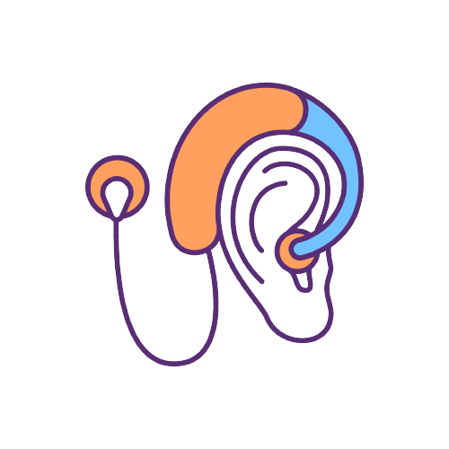
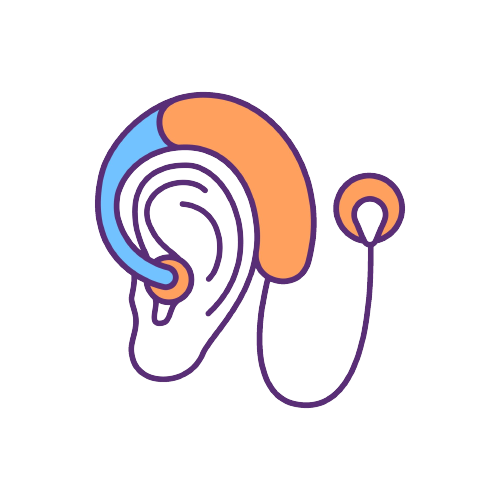

<ion-content [fullscreen]="true">
  <app-header></app-header>
  <div class="flex flex-col items-center justify-center h-full p-2 bg-gray-50">
    <!-- Contenedor de los niveles de volumen L y R -->
    <div class="flex flex-row items-center justify-around w-full">
      <!-- Contenedor del volumen L -->
      <div class="flex flex-col items-center">
        
        <ion-icon name="volume-low" class="mb-2 text-3xl"></ion-icon>
        <input type="range" class="w-40 h-5 slider slider-left" min="0" max="100" value="79" [(ngModel)]="leftVolume"/>
        <p class="text-xl font-bold">{{ leftVolume }}%</p>
      </div>
      <!-- Contenedor del volumen R -->
      <div class="flex flex-col items-center">
        
        <ion-icon name="volume-high" class="mb-2 text-3xl"></ion-icon>
        <input type="range" class="w-40 h-5 slider slider-right" min="0" max="100" value="80"  [(ngModel)]="rightVolume"/>
        <p class="text-xl font-bold">{{ rightVolume }}%</p>
      </div>
    </div>
  </div>
</ion-content>
